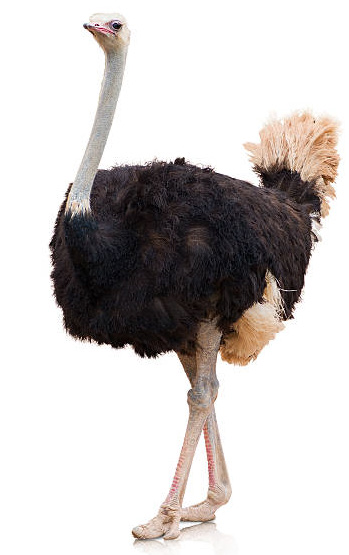
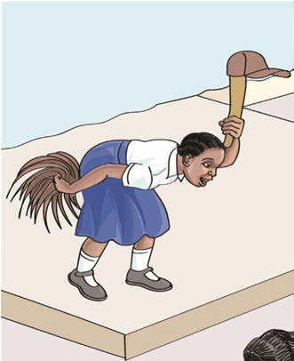

I participate in art activities that involve the body movements.
Acting
Acting is an art form that involves role-playing by imitating people, birds and animals. It involves voice and body movements to send a message to the audience.
Observe the pictures and answer the following questions:


1. Acting the ostrich walk